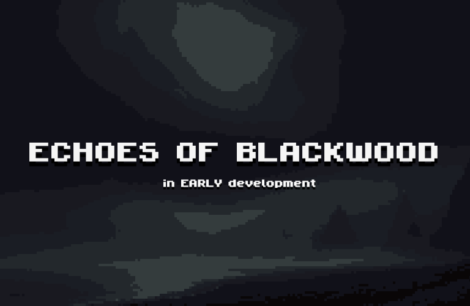

Life (March 27, 2025)
Its been a while since I've updated this site. Its not that I haven't wanted to I've just been caught up in a lot recently. After my last update I ended up having to get
my gallbladder removed fairly quickly, my pancreas levels were at 3000 which is really bad the doctor told me that my pancreas levels are only really seen in people who
heavy drink and I do not. The few days after surgery were miserable. My husband had to help me with everything like getting out of bed and showering. On the bright side
everything is good now I am back to normal and have not been in pain since the first week of surgery. I just got a job as well which is really nice, I start next week.
I also shaved my head for my uncles birthday which honestly I really regret but I needed to restart my hair since it was pretty much fully dead anyways. I thrifted some
CDs today and found a hidden gem and the album or artist isn't anywhere online or streaming I can only listen to the songs on the CD. I am thinking about posting the album
on this site for people to listen to as I believe its really something everyone should hear but I need to check how legal that is first I don't wanna do anything that could
potentially get my in trouble. I started getting back into music production which is nice for me its always been a huge passion of my and I finally was able to get my DAW
back so I have the motivation to start again. Gonna be a bummer for a little but I've been thinking a lot about the future lately and I realized the other day I really don't
know what im gonna do with my life. I had planned on going to college for network engineer because I figured I could make some pretty decent money doing that but in all reality
its not what I wanna do. Everytime I picture myself doing something in tech as a career my stomach sinks and I get super anxious and I know thats not what I wanna do. I love
technology but thats just something I find cool and interesting it isn't something I wanna spend my entire life doing. I love creative stuff like music and art. I want to make
a career out of music and not even like I wanna be a musician, although that would be pretty cool, I just wanna do anything in music whether thats audio engineering or hell even
start my own music label idk I just know I want to do something that I actually enjoy and that is 100% music. It just sucks because my family is very much for going for a career
that is a guarantee to make money like tech and I don't think they'd be very supportive of me going into music as a career. I know I shouldn't live for my family and I should
live for me but it scares the hell out of me to not know for certain if I could sustain myself with my career choice. I don't want to end up doing something in music as a career
and find out I can't make it and then im fucked out of a few years I spent doing stuff for music instead of getting a stable career that I know will support me. I dont know I
wish I had all the answers now on what I should do but I know that its just not how life works. I have to take risks in life if I want rewards and who knows maybe I will succeed
and this will just be something funny I tell people when they ask for advice on music. I know this blog isn't really something where I can interact with people on and I don't even
really know if people read this but just the thought of putting my thoughts and feelings out there for the possibility of somebody out there reading it helps me a lot and if someone
is reading it I want to thank you for giving me your time and reading. I am going to be posting more often and trying my best to update this site more. - Zack
Health Update (Feb 28, 2025)
On the 23rd I went to a quickcare for some abdominal pain I was having. I was informed that I have something called gallstones which is pretty much stones inside my gallbladder.
They proscribed me medication to take for it and said to go on a low fat diet, I had assumed that was the end of it. Later that day my wife noticed the whites of my eyes started
to turn yellow. We went to an emergency room where they told me that my labs showed my blood results for my liver showed 7.6 which was a huge jump from the 1.2 it showed at the
quickcare the day before. They quickly admitted me and I stayed there for about 3 days. They ran a ton of tests and poked me with a bunch of needles in hopes to find out if my
liver was being blocked by one of the gallstones. After all their tests they were able to rule out anything wrong with my liver and discharged me but told me I should quickly
follow up with a specialist and get my gallbladder removed. This is something very scary for me even though I know it should be a quick and harmless procedure. The thought of
surgery has always scared me, on top of my skin and eyes still being yellow. The hospital told me that my liver blood results have gone down to a 4.3 since I was there and is
showing signs of slowly going down but the fact I can look in the mirror and see that I am yellow and so are my eyes scares me. Hopefully everything will go by quickly but
this is just making me see I need to take better care of myself.
Big Announcement (Feb 22, 2025)
I have some really awesome news, at least I think so. I AM WORKING ON A GAME!! All of this is a personal development project however I plan on making it something
really special. I can't give out too much just yet but it is going to be a point and click mystery horror game. I look forward to showcasing more in the future
and hope everyone feels the same way. If you would like to keep up with the project I will be posting updates here as well as the socials listed below
BSKY: swordsaintstudios.bsky.social | UPDATE 3/27/2025: I apologize for this but for the time being I have to cancel this project. Its not something I want to do
but recently with how my life is going I just do not have the time to take on this project right now as I would be the only person working on it. I do plan on at
some point finishing it but for now I have to put that on hold. Once again I apologize but I hope you can understand.

Scam Job (Feb 17, 2025)
Good and bad news. Good news is I got accepted at wrestlemania which is great its a 10 day position and I start in April! Bad news is I had another interview
for a "stable" job that I would start on soon. I did the interview and thankfully I did really good, at least I think so, but thats not the bad part. The bad
part is after I got accepted I decided to look into the company and unfortunately turns out its a pyramid scheme but I don't feel too bad about falling for it
because from what I researched they have been doing this to people for years. Im not sure if any of you would know the company but its Vector Marketing. To be
fair it is my fault for not researching the company BEFORE the interview rather than after but I didn't think too much of it before because I was just excited I
got asked to interview. Anyways the job search continues!
Valentines Day! (Feb 14, 2025)
Had a great valentines day today with my wife. We went to the park and painted my melody and pompompurin figures. We also left a little
message on a rock which I liked. I love my wife so much. I hope everyone had a great valentines day as well. Even if you didn't spend it
with a partner I hope you took the day to love yourself and take care of yourself. 
Job Interview (Feb 13, 2025)
I got a really cool job interview offer today. It's for WWE Wrestlemania 41 retail merch associate. It's obviously not a guarantee but
I'm super excited about the opportunity. I'm not totally sure how much the pay is but I dont really care a job is a job and I know kid
me would be so excited to hear this. I used to love WWE as a kid. Wish me luck!!
My wife loves taco bell.. a lot. (Feb 10, 2025)
My wife got really hungry today and we decided to order taco bell. She ordered a crunch wrap supreme and I got a chicken quesadilla.
As im eating I hear a sweet "I love you" from my wife. I say it back as one does and when I look up and she has her face completely paused
staring at me with a crunch wrap supreme in her mouth.. she was talking about the food. I love her so much.
Pixel Art Project Update (Feb 10, 2025)
I am adding a pixel arcade page to the extra page. Go now and check out what games you could play.
First Post (Feb 9, 2025)
Hello! I'll keep the first post short and simple. I plan on updating this blog regularly with my latest projects, silly little stuff I wanna share,
and maybe some thoughts on the world. Stay tuned!